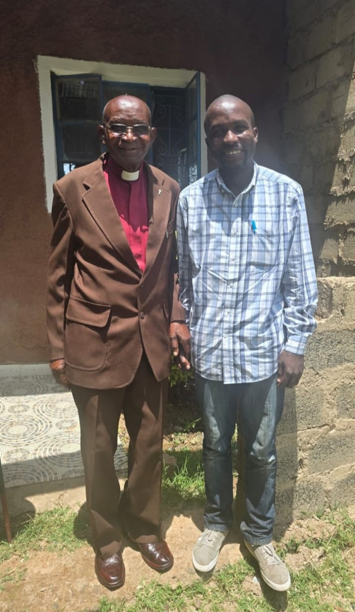

← Back to Memorial
Tributes
All Photos
At His Office in KIMA

A moment with Jack Muhindi
A moment with Pam and Peter during James and Joy's wedding
Enjoying a meal at Roddy's Hotel
With Sister In-law Queen Anyangu
After Graduation Party
← Back to the memorial
×
‹
›